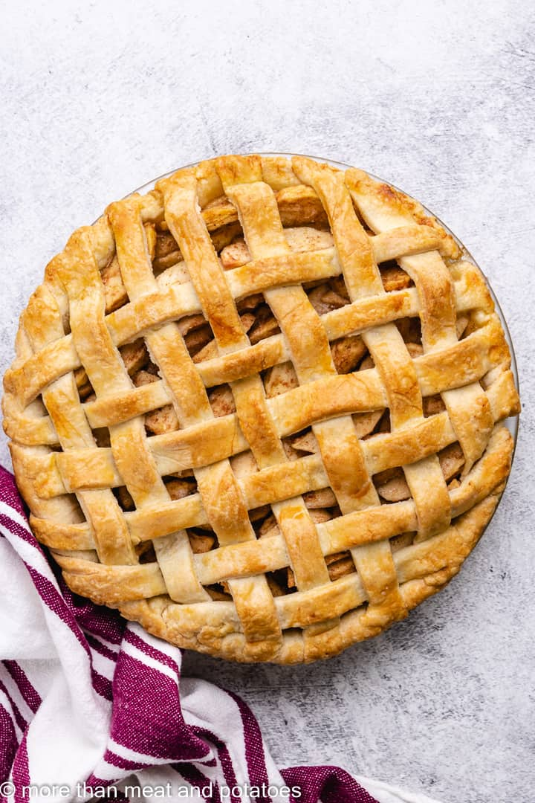

Apple Pie

Description
The saying "as American as apple pie" describes cultural aspects that represent the best America has to offer.
People use it to describe baseball and rock-n-roll.
But none of these things are apple pie. Rambo isn't apple pie.
Predator isn't apple pie. Apple pie is the bar to compare other possibly great things to. Its
supremacy was never in question.
This food could turn the whole world American if eaten at once.
Ingredients
- Apples
- Pie crust
- Granulated sugar
- Brown sugar
- Flour
- Cinnamon
- Nutmeg
- Lemon
- Egg
Steps
- Peel and slice apples
- Mix apples with both sugars, flour, cinnamon, nutmeg, lemon zest, and lemon juice
- Place crust in a pie plate and pour mixture into the crust
- Place another crust over the mixture and tuck it in
- Brush the surface with egg wash, cut vents into the crust, and bake the pie at 400 degrees for 25 minutes